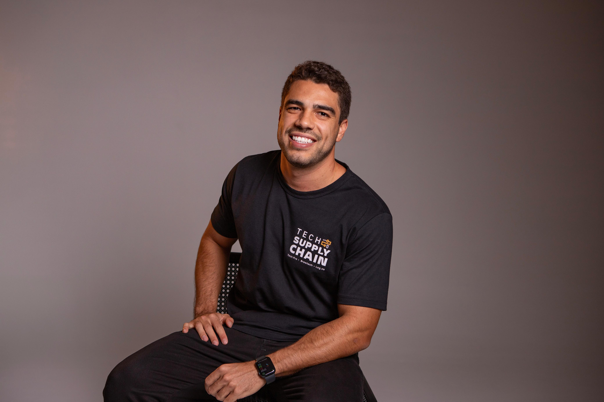

Senior Product Manager · LATAM Senior Product Manager · LATAM Senior Product Manager · LATAM
Senior Product Manager · Supply Chain & AI · LATAM
"Senior Product Manager operating in complex, global-scale environments. From expanding logistics systems into new markets — to independent products built with AI applied to real problems."
"Senior Product Manager que atua em ambientes complexos de escala global. Desde a expansão de sistemas logísticos a novos países — a produtos independentes construídos com IA aplicada a problemas reais."
"Senior Product Manager que opera en entornos complejos de escala global. Desde la expansión de sistemas logísticos a nuevos países — hasta productos independientes construidos con IA aplicada a problemas reales."

AboutSobreAcerca de
I'm a Senior Product Manager with 6+ years building and scaling complex systems at global scale. At AB InBev, I lead product strategy for one of the world's largest supply chain platforms across Latin America — serving as technology reference for South America and aligning a team of 7 PMs.
Industrial Engineer, MBA in AI at USP, fluent in English and Spanish. Based in São Paulo.
Sou Gerente de Produto Sênior com 6+ anos construindo e escalando sistemas complexos em escala global. Na AB InBev, lidero a estratégia de produto de uma das maiores plataformas de supply chain do mundo na América Latina — atuando como referência tecnológica para a América do Sul e alinhando uma equipe de 7 PMs.
Engenheiro de Produção, MBA em IA pela USP, fluente em inglês e espanhol. Baseado em São Paulo, BR.
Soy Senior Product Manager con 6+ años construyendo y escalando sistemas complejos a escala global. En AB InBev, lidero la estrategia de producto de una de las mayores plataformas de supply chain del mundo en América Latina — siendo referencia tecnológica para América del Sur y alineando un equipo de 7 PMs.
Ingeniero Industrial, MBA en IA en la USP, fluente en inglés y español. Basado en São Paulo, BR.
Featured WorkTrabalhos em DestaqueTrabajos Destacados
Karol G, one of the world's most-streamed artists, needed a guest management and auction platform for her annual charity gala by the Con Cora Foundation in Miami. I was invited to build this solution and delivered it in two months.
Karol G, que é uma das artistas mais ouvidas do mundo, precisava de uma plataforma de gestão de convidados e leilão para o seu evento de gala pela Fundação Con Cora que acontece anualmente em Miami. Fui o convidado para desenvolver essa solução e a desenvolvi em dois meses.
Karol G, una de las artistas más escuchadas del mundo, necesitaba una plataforma de gestión de invitados y subasta para su gala benéfica anual de la Fundación Con Cora en Miami. Fui invitado a desarrollar esta solución y la entregué en dos meses.
View case studyVer caseVer casoLeading the technical expansion of a global WMS into a brand new business zone across Central America — from zero to go-live.
Liderando a expansão técnica de um WMS global para uma nova zona de negócios na América Central — do zero ao go-live.
Liderando la expansión técnica de un WMS global hacia una nueva zona de negocio en América Central — desde cero hasta el go-live.
View case studyVer caseVer casoBuilding the framework that connected AB InBev's logistics tech area with the startup ecosystem — from sourcing to production.
Construindo o framework que conectou a área de tech de logística da AB InBev ao ecossistema de startups — do sourcing à produção.
Construyendo el framework que conectó el área de tech logístico de AB InBev con el ecosistema de startups — desde el sourcing hasta la producción.
View case studyVer caseVer casoAutomating an industrial distributor's entire billing pipeline — from multi-format order intake to ERP-ready workflow generation — using N8N and AI document processing.
Automatizando todo o pipeline de faturamento de um distribuidor industrial — do recebimento de pedidos em múltiplos formatos à geração de workflows prontos para o ERP — usando N8N e processamento de documentos com IA.
Automatizando todo el pipeline de facturación de un distribuidor industrial — desde la recepción de pedidos en múltiples formatos hasta la generación de workflows listos para el ERP — usando N8N y procesamiento de documentos con IA.
View case studyVer caseVer casoCareerCarreiraCarrera
11/2025 – Present
Global Product Manager
Anheuser-Busch InBev · São Paulo, BrazilAnheuser-Busch InBev · São Paulo, BrasilAnheuser-Busch InBev · São Paulo, Brasil
Technology reference for South America. Fernando now owns the product strategy for AB InBev's largest global supply chain system — aligning a team of 7 PMs and bridging engineering, business, and global product leadership across 5 countries.
Referência tecnológica para a América do Sul. Fernando é hoje responsável pela estratégia de produto do maior sistema global de supply chain da AB InBev — alinhando uma equipe de 7 PMs e conectando engenharia, negócios e liderança de produto em 5 países.
Referencia tecnológica para América del Sur. Fernando es hoy responsable de la estrategia de producto del mayor sistema global de supply chain de AB InBev — alineando un equipo de 7 PMs y conectando ingeniería, negocios y liderazgo de producto en 5 países.
05/2024 – 11/2025
Product Manager
Anheuser-Busch InBev · São Paulo, BrazilAnheuser-Busch InBev · São Paulo, BrasilAnheuser-Busch InBev · São Paulo, Brasil
Took the WMS into Central America — a new business zone with no existing infrastructure and no playbook. Led everything from requirements mapping and ERP integration design to full go-live, driving 90% system adoption across Mexico's operations.
Levou o WMS para a América Central — uma nova zona de negócios sem infraestrutura existente e sem playbook. Liderou tudo: desde o mapeamento de requisitos e design de integração com ERPs até o go-live completo, atingindo 90% de adoção nas operações do México.
Llevó el WMS a América Central — una nueva zona de negocios sin infraestructura existente y sin playbook. Lideró todo: desde el mapeo de requisitos y el diseño de integración con ERPs hasta el go-live completo, alcanzando 90% de adopción en las operaciones de México.
05/2022 – 05/2024
Associate Product Manager
Anheuser-Busch InBev · São Paulo, BrazilAnheuser-Busch InBev · São Paulo, BrasilAnheuser-Busch InBev · São Paulo, Brasil
Three squads. Mobile, web, and platform. Full product ownership — from discovery through delivery — on one of the world's most complex logistics systems, operating across multiple markets simultaneously.
Três squads. Mobile, web e plataforma. Ownership total de produto — do discovery à entrega — em um dos sistemas de logística mais complexos do mundo, operando em múltiplos mercados simultaneamente.
Tres squads. Mobile, web y plataforma. Ownership total del producto — del discovery a la entrega — en uno de los sistemas logísticos más complejos del mundo, operando en múltiples mercados simultáneamente.
01/2021 – 05/2022
Innovation Project Manager
Anheuser-Busch InBev · São Paulo, BrazilAnheuser-Busch InBev · São Paulo, BrasilAnheuser-Busch InBev · São Paulo, Brasil
Built the funnel that didn't exist. Evaluated 30+ startups, moved 8 into production, managed R$800k in investments — and turned the framework into the area's standard.
Construiu o funil que não existia. Avaliou 30+ startups, levou 8 para produção, gerenciou R$800k em investimentos — e transformou o framework no padrão da área.
Construyó el funnel que no existía. Evaluó 30+ startups, llevó 8 a producción, gestionó R$800k en inversiones — y convirtió el framework en el estándar del área.
07/2018 – 01/2021
Director of Operations
Imersa Tech · Minas Gerais, BrazilImersa Tech · Minas Gerais, BrasilImersa Tech · Minas Gerais, Brasil
Early stage. Full ambiguity. Built operations at an AI/computer vision startup from the ground up — client acquisition, product delivery, and a ~R$200k contract base.
Estágio inicial. Ambiguidade total. Construiu as operações de uma startup de IA/visão computacional do zero — aquisição de clientes, entrega de produto e uma base de contratos de ~R$200k.
Etapa inicial. Ambigüedad total. Construyó las operaciones de una startup de IA/visión computacional desde cero — adquisición de clientes, entrega de producto y una base de contratos de ~R$200k.
FormationFormaçãoFormación
Expertise
Get in TouchEntre em ContatoContáctame
Feel free to reach out.
Fique à vontade para entrar em contato.
No dudes en escribirme.